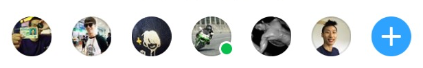

JavaScript
— to —
Native
meetup.tidev.kr

by
프론트엔드 개발자
JavaScript로
파일을 다루는
도구를 직접 만들다

Top Language of Q1 2015
브라우저을 넘어
개발 도구
(test, build.. on NPM)
브라우저을 넘어
하드웨어까지
(Spark, 라즈베리파이..)
브라우저을 넘어
Native App
(Titanium, React Native, NativeScript..)
— 의문 하나 —
어떻게 JS가 Native를?
— 브라우저에 존재하는 —
두 가지 World
〰〰〰
JSDOM
var elem = document.getElementById("title");
elem.style.color = newColor;
sequenceDiagram
JS->>DOM: getElementById
DOM-->>JS: (result)
JS->>DOM: elem.style.color = newColor
var view = Ti.UI.createView();
view.width = 300;
sequenceDiagram
JS->>Native: createView()
Native-->>JS: (result)
JS->>Native: view.width = 300;

— from js to native —
Bridge
sequenceDiagram
JS->>Ti Native SDK: createView()
Ti Native SDK->>Native SDK: [[TiUIView alloc] init]
Native SDK-->>Ti Native SDK: (result)
Ti Native SDK-->>JS: (result)
JS->>Ti Native SDK: view.width = 300;
Ti Native SDK->>Native SDK: self.frame.size.width = 300;
BG Thread
— of —
UI Thread
- Ti & Virtual-dom
- React Native
- Cocos2d-js
- Ti & Java Spring
— 1 —
Virtual-dom 컨셉을 Titanium에 적용하기
이종은

React

Todos
- 전체를 그리기
- 하나만 삭제(or 추가)
- 바뀐거만 업데이트
- 순서만 바꾸기
— from js to native —
Bridge
강 건너는 기술
— 기술 1 —
바뀐 것 찾기
(= 조금 만 나르기)
Steps
- Virtual dom을 만들고
- Virtual dom을 이용하여 실제 ui를 만들고
- 새로 그려야할 때 새로운 Virtual dom을 만들고
- 이전 Virtual dom과 비교해서 최적화된 patch를 만들고
- 실제 ui에 해당 patch를 적용
Q. 모바일에서 이런 상황이 있었나?
A. 😂 없었다
— 그건 그렇쳐도 —
React는 무슨 재주로?
— performance? —
sequenceDiagram
JS->>Native: a
JS->>Native: b
JS->>Native: c
view.width = 300;
view.backgroundColor = '#ff0000';
view.borderColor = '#ffff00';
— performance! —
sequenceDiagram
JS->>Native: a,b,c
view.applyProperties({
width: 300,
backgroundColor: '#ff0000',
borderColor: '#ffff00'
});
performance!!
sequenceDiagram
JS->>Native: A,B,C
view.applyProperties({
// new properties
});
view.applyProperties({
// new properties
});
view.applyProperties({
// new properties
});
React Native
Android
Titanium
Ti.Next
 tidev.kr
tidev.kr